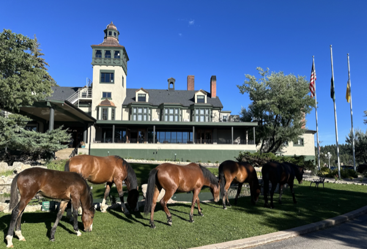
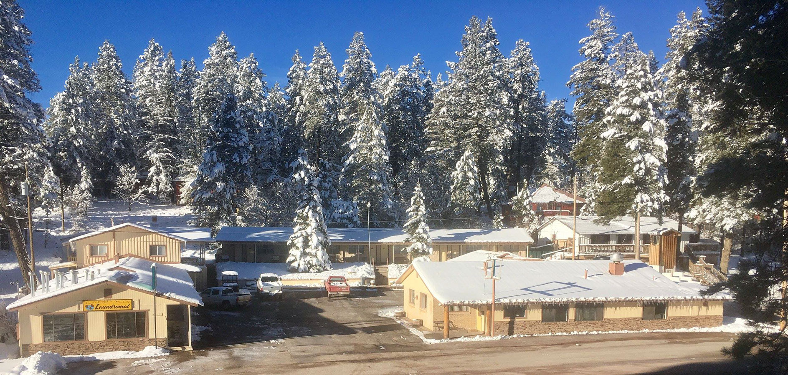
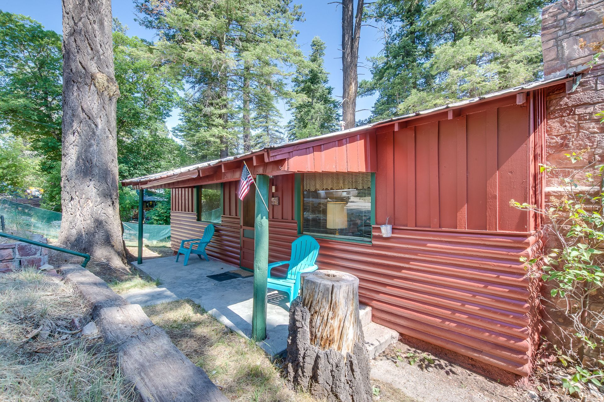
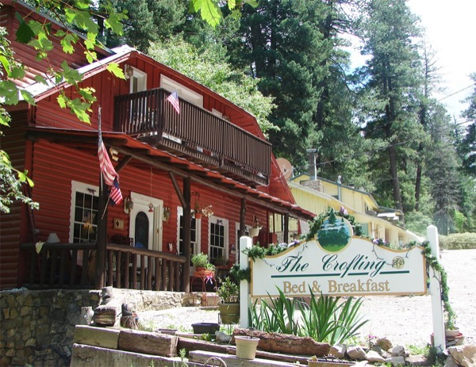
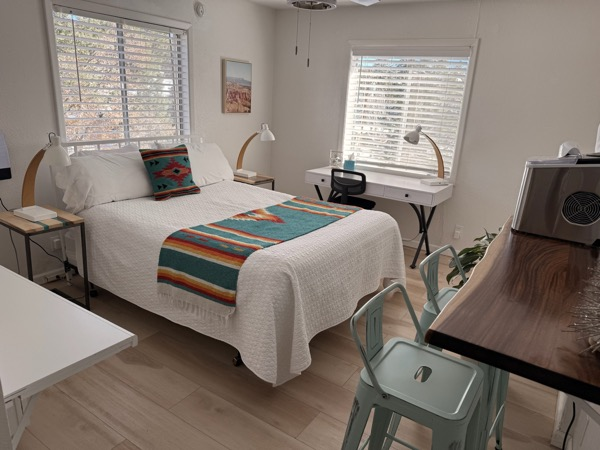
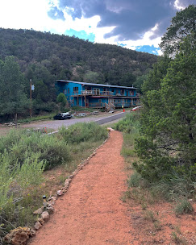
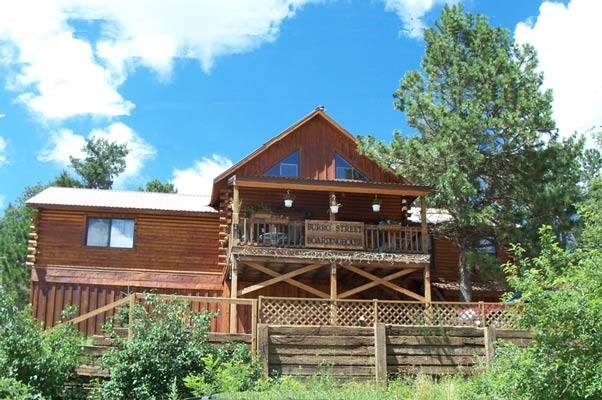

Cloudcroft Lodging at a Glance
Cloudcroft is not a chain-hotel market. It is a small mountain village where the lodging mix leans toward historic properties, cabin clusters, small independent motels, bed-and-breakfasts, and a large layer of short-term rentals. That is part of the appeal. It also means travelers need to adjust expectations. You come here for pine air, elevation, quiet, and character — not for uniform brand standards or a deep bench of late-night services.
For most travelers, the real choice is not simply hotel versus hotel. It is whether you want history, walkability, cabin privacy, a simple basecamp, or more room for family and friends. The booking logic is different here. Travelers looking for a classic “hotel stay” have limited choices. Travelers willing to book a cabin, condo, or professionally managed short-term rental have many more.
Historic Stays
The Lodge and character properties book first. These are the stays most tied to Cloudcroft's identity.
In-Town Cabins
Walkable cabin properties fill quickly. They combine cabin atmosphere with village convenience.
Event Weekends
Holidays, festivals, fall color, and summer peaks drive the highest demand across the market.
Family Rentals
Larger homes with kitchens and space for groups. These are harder to replace last-minute.
Seasonality matters. Summer and early fall are prime. Winter is conditional — snow, road conditions, and Ski Cloudcroft operations vary. Shoulder seasons are quieter and easier to book.
Best-Known Lodging Options
Cloudcroft’s lodging market runs from a historic 1899 resort to budget hostels, with cabin clusters, B&Bs, motels, and a large rental layer in between. Each property has a different personality and a different guest fit. Below are the best-known options — click through for full booking guides with rooms, photos, and what to verify before you book.

The Lodge at Cloudcroft
Historic ResortCloudcroft’s signature stay since 1899. On-site dining at 1899, golf course, pool, and the most iconic atmosphere in town. Best for couples, golfers, and destination weekenders.
🌐 223collectionhotels.com

The Grand Cloudcroft Hotel
HotelA more conventional independent hotel on James Canyon Highway. Standard rooms with Wi-Fi, work desk, mini fridge, and ADA options. Best for travelers who want a simple, practical hotel setup.
🌐 grandcloudcroft.com

Dusty Boots Motel & Café
Motel & CaféA themed, small-scale motel with an attached café serving homemade food. Quirky, nostalgic, and more personal than polished. Best for travelers who like roadside character with on-site breakfast.
🌐 thedustyboots.com

The Cabins at Cloudcroft
Cabin ResortA professionally run cabin cluster in town with kitchens, fireplaces, and a unified booking engine. The cleanest middle ground between a hotel and a vacation rental. Best for families and couples wanting cabin privacy.
🌐 cabinsatcloudcroft.com

The Crofting B&B
B&BA 1909 historic house with 8 individually furnished rooms, private balconies, and home-cooked breakfast. Intimate, quiet, and host-driven. Best for couples and travelers who want character over convenience.
🌐 thecrofting.com

The Summit Inn
InnA small, renovated, owner-run inn with 10 rooms, kitchenettes in every room, free Wi-Fi, and free parking. Walking distance to Burro Avenue. Best for budget-conscious travelers who want a practical base in town.
🌐 summitinnnm.com

Cloudcroft Hostel
HostelA genuine mountain hostel on Highway 82 in High Rolls with dorm beds, private dorms, group rentals for up to 25, a shared kitchen, and trails from the door. The most budget-friendly option near Cloudcroft.
🌐 cloudcrofthostel.com

Burro Street Boarding House
B&BA long-running B&B on Burro Avenue — one of the most central locations in town. Limited web presence; call directly for current availability and details.
Spruce Cabins
CabinsA straightforward cabin operation with online reservations and a range of sizes. Rustic, direct, and convenience-oriented. Military and senior discounts available.
🌐 sprucecabins.onressoftware.com
Nostalgia Cabins
CabinsA collection of individual cabins plus a clubhouse. Functions more like a grouped rental compound than a hotel. Best for family reunions, groups, and events.
🌐 nostalgiacabins.com
Want the full details? Several properties above have dedicated booking guides with room-by-room details, photos, amenities, guest reviews, and what to verify before you book. Look for the “Read full guide” links.
Cabins, Condos & Short-Term Rentals
This is a major part of Cloudcroft's lodging market, not a side note. The village and nearby mountain area have a large short-term-rental inventory. Vrbo alone shows more than 148 Cloudcroft vacation-rental properties, which helps explain why the market feels broader online than it does if you look only at traditional hotels.
✅ What you gain
- More space
- Kitchens
- Decks, fireplaces, and outdoor hangout areas
- Better fit for families and groups
- More privacy
- A more “mountain trip” feel
⚠️ What you give up
- Front-desk consistency
- Easier late check-in support
- On-site dining
- Daily service, in many cases
- The simplicity of one building with one staff structure
Representative Operators
The Cabins at Cloudcroft, Spruce Cabins, Nostalgia Cabins, Cloudcroft Properties-managed rentals, and many individual-owner vacation rentals on major platforms.
Caution Points
- ⚠ Cleaning fees and house rules can change the value math
- ⚠ Winter access and steep roads can matter
- ⚠ Parking can be tighter than expected
- ⚠ Check-in may be digital or self-service
- ⚠ Pet policies vary sharply
- ⚠ “Close to town” can still mean uphill, icy, or inconvenient on foot in bad weather
The short version: If you want the most Cloudcroft-like stay, a cabin is often the right answer. If you want the least friction, a hotel or B&B may still be smarter.
How the Main Options Compare
Best Historic Stay
The Lodge at Cloudcroft — This is the clearest “come for the property itself” stay.
Best Classic Cloudcroft Trip
The Lodge at Cloudcroft or The Cabins at Cloudcroft — Pick The Lodge for history and on-site dining. Pick The Cabins for pine-town cabin atmosphere.
Best for Families
The Cabins at Cloudcroft — Cabin format, space, and a more flexible family setup make this a strong default choice.
Best for Couples
The Lodge at Cloudcroft or The Crofting B&B — The Lodge is better for a romantic weekend with dinner and drinks. The Crofting is better for a quieter B&B stay.
Best Simple Overnight
The Grand Cloudcroft Hotel — It appears to offer the most standard hotel-style setup.
Best Cabin Privacy
Cabins at Cloudcroft, Spruce Cabins, or Nostalgia Cabins — Your choice depends on whether you want a more unified operation or a more group-oriented cabin compound.
Best for Walking to Town
The Lodge, Burro Street Boarding House, and some in-town cabin properties — Walking convenience varies by exact property, but these are among the more central-feeling options.
Best Mountain Atmosphere
The Lodge at Cloudcroft and the cabin properties — The choice is whether you want historic common spaces or private cabin time.
Best for Convenience Over Charm
The Grand Cloudcroft Hotel — It looks built around room utility rather than romance or nostalgia.
What Travelers Should Know
Seasonality
Summer, fall color periods, holidays, and snowy winter weekends drive demand. Plan ahead for peak times and expect higher prices during these windows.
Weekend Demand
Friday and Saturday nights can tighten quickly, especially when there is an event in town or attractive weather down in the basin draws people up the mountain.
Holiday Demand
Book early for holiday weekends, summer peak periods, and Christmas-season visits. These windows sell out faster than any other time of year.
Snow & Winter Driving
Check road conditions before you go. A place can be bookable and still be harder to reach than expected in winter weather. US-82 can close or require chains.
Altitude
Cloudcroft sits around 9,000 feet. Guests arriving from low elevation may want an easier first evening. Hydrate, take it slow, and avoid overexertion on day one.
Parking
Verify directly, especially for cabins and older in-town properties. Some spots are tighter than expected, and winter conditions can complicate access further.
Pet Policies
Do not assume. Some properties explicitly allow some pet rooms; others do not. Always ask directly before booking if you are traveling with a pet.
Late-Night Services
This is a small village. Do not assume broad late-night dining, easy front-desk staffing, or round-the-clock backup. Plan accordingly.
No Chain Consistency
That is part of the appeal, but it also means photos, room categories, and guest expectations deserve careful reading. Every property here is independent.
Verify Amenities
Wi-Fi quality, fireplaces, breakfast service, ADA access, restaurant hours, and winter access can matter more here than in a larger market. Confirm directly.
Best Choices by Traveler Type
Romantic Weekend
The Lodge at Cloudcroft — History, atmosphere, and on-site food and drink make it the strongest romantic pick.
Family Mountain Trip
The Cabins at Cloudcroft — More space and a cabin layout usually beat a standard room for family travel here.
Historic or Nostalgic Stay
The Lodge for grandeur, The Crofting for intimacy. Both deliver a sense of place and history that newer properties cannot match.
Practical Overnight
The Grand Cloudcroft Hotel — The cleanest fit for a straightforward hotel stay without the extras.
Cabin Getaway
The Cabins at Cloudcroft — The clearest professionally operated cabin-resort structure in the market.
Bringing a Dog
The Grand Cloudcroft Hotel — Pet rooms are clearly listed. Verify current policy and fees directly before booking.
Food & Drinks On-Site
The Lodge at Cloudcroft — Dusty Boots also matters here, but its dining hours appear more seasonal and should be checked directly.
The Bottom Line
The truth about staying in Cloudcroft in 2026 is simple: this is a mountain village where lodging is part of the character of the trip. The best stays are not the most uniform ones. They are the ones that fit the kind of trip you want.
Travelers who want history, atmosphere, and a proper sense of place should start with The Lodge. Travelers who want a simple hotel should look hard at The Grand. Travelers who want the strongest all-around cabin answer should study The Cabins at Cloudcroft. Travelers who enjoy smaller hosted properties should consider The Crofting. And travelers who like local, independent, slightly idiosyncratic places may find Dusty Boots or one of the smaller cabin properties more memorable than any standard room.
Cloudcroft will reward travelers who like pine air, character, and a slower pace. Travelers who want chain predictability, lots of services, and broad inventory may prefer to sleep in Alamogordo or a larger mountain market and visit Cloudcroft by day.
Ready to Book Your Mountain Stay?
From historic hotel rooms to private cabins in the pines — Cloudcroft has a place for every kind of traveler.